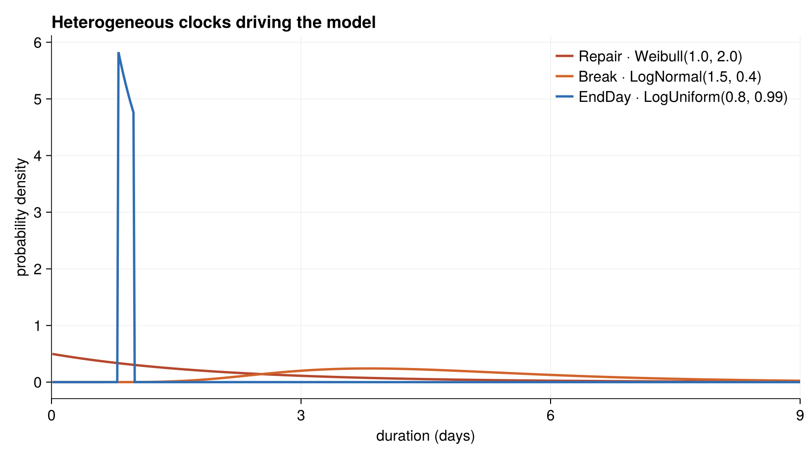
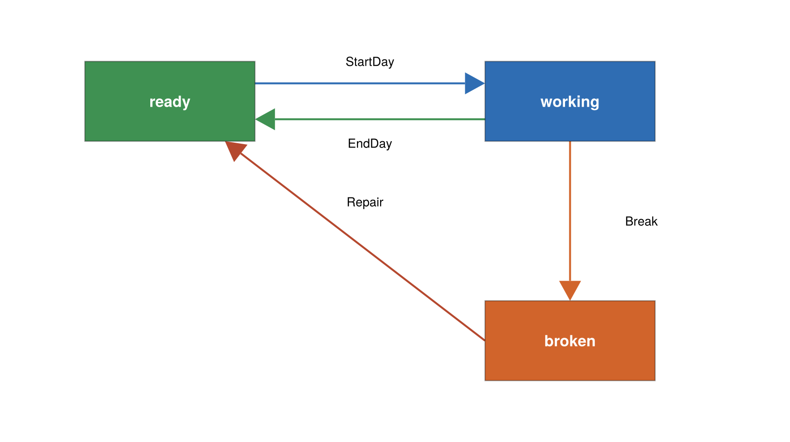

The Reliability Model
The reliability example simulates a fleet of machines — think of a yard of trucks — that go out to work each day and, as they accumulate hours, break down and get repaired. It is a compact model whose real job in this repository is to demonstrate that ChronoSim's older three-argument enable signature still works unchanged.
Where it comes from
There is no external citation. The model is a purpose-built example. Its vocabulary is generic — the code speaks of actors, workers, and a crew rather than trucks specifically — so read "machine" for any unit that works, ages, and fails.
What it models
A fixed fleet of 15 machines. Each day a crew of up to 10 of them is put to work at a fixed start time (8:00, with time measured in days). While a machine is working it can either finish its day or break down. The chance of breaking down rises with the machine's accumulated work age — the total time it has ever spent working — so machines that have logged more hours fail sooner. A broken machine is repaired, which returns it to service and resets its age to zero, as though it were made new.
State
Each machine is a keyed record:
@enum Activity ready working broken
@keyedby Individual Int64 begin
state::Activity # ready, working, or broken
work_age::Float64 # cumulative time ever spent working
started_working_time::Float64 # sim time the current stint began
endEach machine also carries an immutable bundle of the distributions that govern its timing:
struct IndividualParams
done_dist::LogUniform # time to finish the workday
fail_dist::LogNormal # time to failure
repair_dist::Weibull # repair duration
endThe whole fleet is the observed physical state:
@observedphysical IndividualState begin
actors::ObservedVector{Individual,Member}
params::Vector{IndividualParams}
workers_max::Int # daily crew-size cap
start_time::Float64 # time of day the workday starts (8/24)
endThe constructor IndividualState(actor_cnt, crew_size) builds every machine as Individual(ready, 0.0, 0.0) and gives them one shared parameter set: LogUniform(0.8, 0.99) for finishing the day, LogNormal(1.5, 0.4) for failure, and Weibull(1.0, 2.0) for repair.

The three clocks live on very different timescales: the end-of-day LogUniform is a narrow spike just under one day, while failure and repair spread across several days.
Events
Four events drive the model. StartDay has no argument; the others carry a machine index.

A single machine cycles through three states; each arrow is the event that drives the transition.
StartDay — always enabled, it fires once per day at the workday start. Its enable computes a deterministic delay to the next 8:00 boundary and returns a Dirac clock, so the workday begins at the same time every day. When it fires, it walks the fleet and sets ready machines to working (recording their start time) until the crew cap is reached.
EndDay(machine) — enabled while a machine is working. Its clock is the machine's done_dist (LogUniform). Firing returns the machine to ready and adds the elapsed stint to its work_age.
Break(machine) — enabled while a machine is working. This is where the aging model lives. Rather than starting the failure clock at the current stint, its enable offsets the clock's start backward by the accumulated work age:
function enable(evt::Break, physical, when)
started_ago = when - physical.actors[evt.actor_idx].work_age
return (physical.params[evt.actor_idx].fail_dist, started_ago)
endso the failure hazard is a function of total work age, not of the current day. Firing sets the machine broken and folds the stint into work_age.
Repair(machine) — enabled while a machine is broken. Its clock is the repair_dist (Weibull). Firing returns the machine to ready and resets work_age = 0.0, restoring it to as-new condition.
A warm-start initialize! gives each machine a random initial work_age drawn from Uniform(0, 10), so the fleet does not all age in lockstep.
The three-argument enable, on purpose
Notice that the enable methods above take three arguments — enable(event, physical, when) — not the four-argument form enable(event, physical, θ, when) that the landspread model uses. This is deliberate. The header comment explains:
This module DELIBERATELY keeps the pre-θ-seam three-argument
enablesignature. ChronoSim's engine now calls the four-argument θ-seam form, and its default method forwards to this one, so a model that reads no parameters from θ needs no change. This module (and itsReliabilityDerivedSimtwin) is the suite's standing evidence that the fallback works.
In other words, the engine always calls the four-argument form internally; a default method forwards it to a three-argument method. A model that reads nothing from the parameter vector never has to be touched. Reliability exists to prove that backward-compatibility path keeps working.
The derived twin
As with the other paired models, ReliabilityDerivedSim (src/reliability/reliability_derived.jl) is a copy whose triggers are derived from the preconditions. The physical state, events, and timing are identical; the only difference is that EndDay, Break, and Repair declare a @precondition and let ChronoSim derive their triggers, instead of writing @conditionsfor blocks by hand. StartDay stays hand-written in both twins, because its precondition is true — it reads no state, so there is nothing to derive from.
Because both twins key their clocks by nameof(type), their trajectories can be compared directly; that comparison is what test/test_differential.jl and test/test_overapprox.jl check. See Running the Reliability Model.